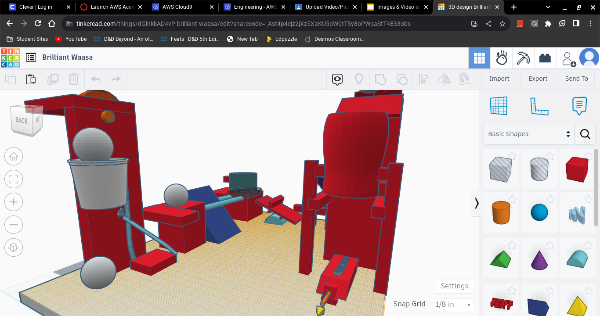
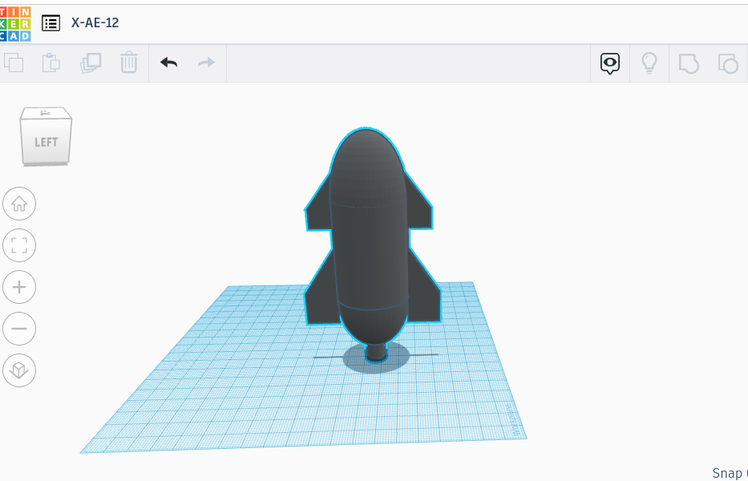

8/25/23- this week we had around three presenations and one video day that i was present for i have to say
overall this was a good week we watched some stuff abour saftey i wasnt here for the challenge day sadly
im prodbably going to play baludrs gate and dnd all weekned while doing some spaish work and trying to
not get sick or in the process im also going to get new glasses and i learned nothing new this week
albongias soup
8/21/23 - This is my second journal entry
9/8/23 - This will be my third journal entry i would say i had a good week the major part was playing flag football
which i had fun playing and rembering how i used to play this week i learned how troublesome and annoying tinkercad can
be but also how helpful and benifical it can be for making plans and cading porjects and other assinments
our machine will use a ramp to bring our ball to a cup then pulley it down and have it go on a platfrom for it to then
trigger a set of reactions to use a seesaw the correct name escapes me then to knock down some domonos then for it
to knock a ball into a funnel whch will then go down onto a sort of cannon contraptcion whcih will use the air to fire
off a needle to then finally opo a ballon the most challengeing part will of course be to make this air cannon contraption

9/22/23 - We have spent the last two weeks doing a combination of worksheets assinments and the chalenges because the wifi has been down
we have also been working on our rude goldberg machine a lot our design was a fail our air cannon mahcine gun sadly ddnt work like we had
hoped iit would this happend because we didnt have enough force or direction as the needle wuld hit the side or would go so slow it would
simply bounce off the ballon making it fail every single time in hindsight we whould have made stronger structure and mad eit higher off
the table so we would have more force my main job was to cut and tape or overall construction while working within the pre described conditions
and regualtions made in our cad desighn in conclusion it was a helpful and overall positive effect with a sad conclusion of our machine
for the second week we did two challenges one was the E i got one with no measuremts which was easy and i made in cenimeters mine i
miscounted how big it was and made it impossible to make withouth looking extremly scuffed which it did my flotation device also failed
as it ddint have enough surface area and weighed to much to remain afloat for more than a few seconds though the pen we put in stood up
no problem in the water for the entie duration no clue why and i dont feel like figuring it out
im not the most interested in computer engineering whiich we had a small unit on but i think it will be fun to play around with and try
out some new stuff about computers the pats used to build them so taht when i do wanna upgrade from my dads old one i can ask him a budget
and see how nicei could make it
9/29/23 - Today we learned how the iner workings of a computer work and how each pecie iteracts with the other pecies around it
me personally none of the parts really interest me as thats not the most exciting fild though i did like disecting the old computer
whcih transitions me into my favorite thing we did this week which would be the previousoly said computer disecction i mainly learned
what the difffferece beween ram and normla storage this weekend im going to try and finish the next boss fight in baldurs gate three
which is the raphel fight some big demon dude custom muisc the whole nine yards cant wait to get absolutley crushed and destroyed by
like everything and anything in that stupid fight im also doing max difficulty and trying to go in without using chesse starts like barrell
mancing or to save every rund so i can plan for six years then fight him just gonna go in and do some shit to try and win
/
10/6/23 - well i learned a bit of it in about a day then took a test which i feel relativeley confident on and still slighlty worried if i did well
i personally feel like i did that aside i lerned how its usd in turn with biology to make a variety of products and things that normal people
will use in our everyday life one day even if now it isnt possible they hope to evetually make it possible for us to use these robots and have
access to these prosthetic limbs and organs maybe even organelle one day i was sick most of the week so i didnt take part in the hand excersize
so i didnt have the absolute pleasure of making one of these contraption i can give my idea of how i would it probably be complety wrong and
might be physically impossible you would make a hand taking care that it had some sort of 3d to it so you could lopp string around the fingers
by using sting to mak it move i imagine tape and bending would be your best use for this idea now onto what ill do to make uo not having any
pictures i ait doign nuting sorry ill post something later on but im not going to home coming sadly as i just dont really feel all to inclined to
and the price and line for tickets is way to much hell no it aint worth the effort or time
10/13/23 - We leraned about areospace engineering this week and began our unit on it we learned how planes fly and how boeing and airhub own every plane
commerically in the world which is a very impressive feat i have found how planes work and all the forces that affect including lift drag and thrst
as wel as weight i also did a bom or a bill of materials on our new botle rocket project im working with my friend noah and we have made the decsion
to add sheels to our "rocket" it seems more like a airplane now but that does not affect my ecceitment in evne the slighest i belive it will be fun to
see how far we can go with our new design im not worried for our test on this unit i know most of this stuff and wil make sure to study all week so that
i can do well the fact that ive done not so hot on the other tests is worrying but ill do m best to riase y grade and do well i apoligize for how corny
and like its me making fun but i do belive that ill do well now time to try and fix the rest of my website so it will be up to snuff but the bom is linkied
inside of the picture of the CAD you just gotta click on it
/body>

10/20/23 - This week we leanred alot less on siled and preseations and instead by how horriblye every sigle rocket failed on the practical flight tests
including mine ethans ligh skin ethans and somo though me and noahs rocket had lost of hicups including having our bottle stolen and used for a mid rocket to
having multiple hot glue guns fail slowing our overall production by a lot the bottle part still angers me but at the end we had to do a mad dash to finish it
i burned myself so i bad i now have a smalll cist on my hand dsent hurt just feels weird to the touch itll be gone in one to tow weeks and ill be none the wiser
the wheels we attached succsefully dont even know how but it worked went a decet bit but because we added to much psi shit exploded all over the place two wheels flew
off in each direction in hindsite should have done 40 not 80 and just let ot cost donw the slanted elevation of the sidewalk but oh well whats done it done overall i
had a great time would reccomned if your bored and are an idiot
10/27/23- this week in enginnering class we learned about enviormental enginnerign and all the ways it currently effects and controls branches of our society and the way we use
it in everyday life these include waste managemnt including water waste and all other things related to it like balck water gray water and clear watser and how each looks
and is made throigh humna processes clear being staright tap clean and managed gay is whoer water and sinks becomeing gary after used to clean off humans then black is made
when we defecacte or piss into the water which cuaes it to become black and posinous to the human body we also leanred about the trianle of hazards and what each color means
and rpersents and hwoo it will effect the human bpdy f these clear warning s are ignored as they so of tena re by people we also leanred about sound and light enginnering
and how they also use taht to help the natural wildilife in areas close to streets airports and mountains for example how the mountains here cant ahve any more ligh on them
as it would interfer with wildlife we also made out own filtration system which worked about as weel as we expected it to work so we got a light piss color while others got
darker and one person got clear water im excited for it cause halloween is coming up and im going to a bunch of differnt shops tommrow to buy some comics and game materials
plus im halfway throigh another baldurs gate playthrough badnews im going much slower cause im going for more buffs and overall completion of the game im going to end up
murdering halsin for a permenat fish buff that will give like a five percent buff to soem shit i dont giv ethe slightest crap about
11/9/23- This week in enginnering class because we forgot to update last week we now have a break in our weeks so lets go over all we did this week including making circuts and other similliar contraptions
i do not get how that works even in the slightest what i do get is how i am appaled at how baldy we have been denied our due grivenaces and undersating by not allowing us to partake in a assiment of our
knoledge and ability overall im not interested in this i dont find it very enjoyable i dont really understand this though the group work was fun to hang out with my friends the lights were pretty eye catching
as people would say now onto the next part of my day this weekend we gonna whoop rahpel again he is getting these hands gonna whoop him part two babyyyyyyy this time ima use a biffernt build and use actual
staregy and not just unga bunga crit spam him with two champions and counterspell i might also try and use the one shot with gold strta i would need to rob lorkean which might be a bit boring but mone is money